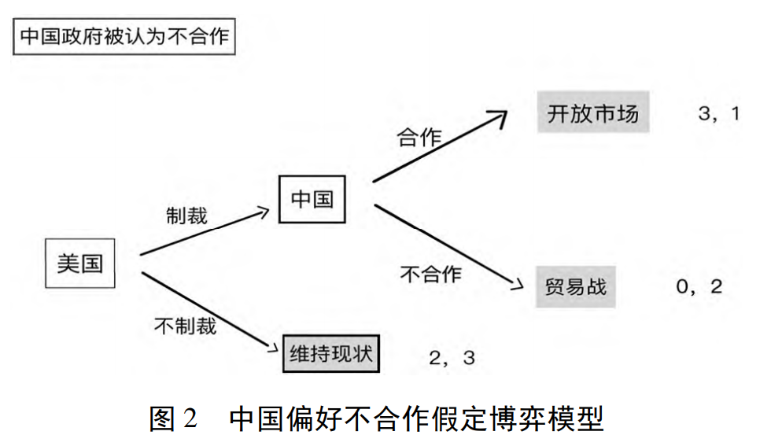

收录于合集

国际关系理性博弈中的心理变量
——兼论特朗普政府发起对华贸易制裁的知觉因素 **
**
**
**
作者： 张艳伟，岭南师范学院马克思主义学院国际问题研究所副研究员、中国人民大学访问研究员；许勤华，中国人民大学国际关系学院教授、博士生导师。
来源： 《山东社会科学》2022年第2期
摘要
博弈论出于“理性人”假设，精于成本收益演算，是经济领域应用最为广泛的理论分析工具之一。不同于经济领域的纯粹理性博弈，国际关系领域的博弈，既是关于成本收益的理性权衡，也是对成本收益预判的知觉过程。对成本收益的预判，既有对博弈整体环境、规则、战略等要素的推演，也有对行为体偏好的预估，这两个过程都存在受决策者知觉等（心理变量）影响的可能性，进而改变博弈进程。美国特朗普政府在“贸易战双输”的理性判断面前，作出了发起对华贸易制裁这一“任性”的决策，便是“ 心理变量影响理性博弈 ”这一机制的典型案例。
基于“理性人”的假设，博弈论认为，行为体的决策与博弈都是“成本和收益的游戏”。但在政治心理学家看来，博弈中不仅有成本收益等理性变量，决策者不同的偏好和知觉等心理变量，也会影响博弈选择和进程，甚至会逆转政策选择。因此，减少博弈失衡或达至均衡，不仅要分析理性变量，还要考量心理变量。那么，如何考量心理变量？国际冲突中的博弈如何达至均衡？国际社会普遍认为贸易战是双输行为，美国特朗普政府为什么依然发动对中国的贸易制裁？本文尝试 综合运用博弈论的理性分析和政治心理学认知理论 ，从个人、单位、体系层次分析影响博弈的自变量，重点研究知觉（及错误知觉）等心理变量对博弈的影响，并以美国特朗普政府对中国发起贸易制裁为例开展实证研究。
01
研究现状与方法
（一）国际关系理论“理性人”与“心理人”假定之争
**
**
国际关系中的行为体是如现实主义、自由主义等理性主义理论主张的“理性人”，还是如建构主义、认知心理学认为的充满人性的“心理人”，成为主流国际关系理论假定的一个核心分歧。按照经济学的假设，所有行为在本质上都是理性的，人们在采取行动之前会计算可能的代价和收益。理性选择强调的是行为体如何使其利益最大化，以及怎样采用最有效的手段来实现这些利益。基于这一假设，研究者可以建立一种有关人类行为的模型，这就是理性选择模式，如结构现实主义、博弈论等。建构主义和政治心理学基于“心理人”的假定，更多强调行动者的能动性，试图表明政治世界的身份、共有知识、知觉、情绪、偏好等“人情味”。
上述两种核心假定的不同甚至相冲突的两种理论，运用于国际问题研究时，会得出明显不同的结论。比如，进攻性现实主义的代表米尔斯海默主张，国家对权力的追求导致冲突不可避免，国际关系中的安全困境只能以悲剧收场；而建构主义认为，并非结构而是观念建构身份、身份决定利益，通过建构不同的规范、认同和文化，就可影响甚至改变国际政治中国家行为体的具体行为、利益和优先选择等。
本文综合运用博弈论的理性分析和政治心理学的认知理论，对国际关系中的决策开展分析研究。在此基础上提出， 影响国际关系博弈的变量有理性变量和心理变量，理性变量是核心变量，心理变量是重要变量，二者相互影响，其机制正如马克思主义理论中物质与意识、客观与主观之互动。
（二）研究方法
博弈论的研究方法主要采用模型分析，国际政治心理学的研究方法主要有实验方法、内容分析法、问卷调查、案例研究等。本文主要采用博弈论的模型分析和政治心理学的内容分析法，对博弈中的理性变量和心理变量展开内容分析，并通过中美贸易制裁这一案例开展实证研究，揭示博弈中理性变量和心理变量的关联性及对博弈的影响。
02
国际关系理性博弈中的心理变量
（一）国际关系博弈中的理性变量
博弈论有两个基本假设，一是“理性人”假定，二是“共有知识”假定。在此二前提下，博弈论给出了每种博弈的七个要素:（1）参与者（或行为体、玩家），数目≥2，国际关系博弈中的参与者主要为主权国家；（2）收益；（3）博弈规则；（4）获取信息的条件；（5）战略；（6）总体环境；（7）竞争行为的互动。
在博弈中，所有参与者们被假定为“理性人”，同时拥有大量“共同知识”（包括：该博弈、参与者都理性、博弈收益、规则等），参与者能够（理性）选择的变量是发送战略信号和（或）行动（战略），战略是影响博弈进程和结果的核心变量（本文称之为“理性变量”，是“收益”因变量的自变量，不同的战略和战略组合产生不同的收益）。作为“理性人”的博弈参与者总想赢多失少，为此需要尽力获取其他参与者有关总体环境、战略选择和获取知识的信息。但博弈者能够获得的信息往往是有限的，通常很难确切获悉其他方的战略选择，因此参与者可以根据“理性人”假定的博弈论原理找到最佳的策略或策略组合，选择占优或均衡的己方战略，发出战略信号，开展博弈互动。整体上看，博弈进程沿着理性分析的路径演进。
我们以博弈模型中最基本的零和博弈和非零和博弈为例加以说明。
1.零和博弈
**
**
零和博弈，又称为“胆小鬼博弈”，指一方所得即为他方所失。
在“胆小鬼博弈”模型中，两名车手A和B在一条长而直的公路中间画一条白线，从白线两端相对出发高速行驶，如果相撞可能双方车毁人亡，但先让开的一方会被耻笑为“胆小鬼”，而另一方则胜出。根据“最小化- 最大化（minimax）原则”，战略组合a1 b2和a2 b1是一个可以预测的唯一纳什均衡，因为车手A和B都是拥有“共同知识”的理性人，不会选择占优战略之外的其他战略。以性命押注“胆小鬼博弈”的人只能是非理性的人，因此a2 b2 战略组合不能成为本文所述的理性变量，“理性人”将挽救双方性命。
在国际政治实践中，零和博弈强调冲突发生的可能性以及解决冲突的机制，诸如扩军备战防范入侵、结成军事同盟、核威慑等 ，如1962年的古巴导弹危机就属于零和博弈，美国当时拥有核优势，肯尼迪采取强硬立场，封锁古巴，对苏联进行核讹诈，迫使赫鲁晓夫作出让步。
多尔蒂等人指出，“理性不能被假定，而是需要经验分析来验证”。戴维·辛格等人指出，“在紧张和焦虑的情况下，决策者可能不会按照被称为理性的效用标准行事”。
2.非零和博弈
非零和博弈，又称“变数博弈”，指双方或多方得失不等。“囚徒困境”是两人非零和博弈最著名的例子。
两个嫌疑人A和B被抓获后分别关押、审讯，必须选择是否坦白并指认同伙。如果都抵赖，将被指控轻罪，入狱1年；如果都坦白并指证同伙，将被控重罪，入狱10年；如果一人坦白并指证同伙，另一人抵赖，坦白者将被释放，抵赖者将遭严惩，入狱20年。
A和B理性的选择都是坦白，双方各入狱10年。尽管对双方而言，a1 b1选择最佳，但双方互不信任，无法达成合作共识。在“囚徒困境”中，每个“理性人”参与者都只会考虑自身眼前利益，不惜通过背叛的方式谋求获得比采取合作所得更高的收益，但双方都采取背叛的方式导致各方所获收益反而低于采取合作所获收益。这种以“自利”为目标的“理性”行为却导致了“不利”的结果。
“囚徒困境”模式常被应用于国际裁军问题上 ，尽管双方都希望通过裁军获得经济上的好处，但彼此都不能肯定对方的长期目标是什么，所以都宁愿奉行更为谨慎的方针，维持一种耗资巨大的军备平衡。从理论上讲，处于“囚徒困境”中的军备国家都希望削减军事开支而增加经济收益，但由于各方都无法确定他方国家意图，且历史和经验中的每一次欺诈和背叛行为都会加大彼此的不信任，所以“自利”的短期行为会破坏未来合作的光明前景。“囚徒困境”模式告诫决策者们，必须从长期利益出发，着眼于未来。从这个意义上而言，“囚徒困境”比“零和博弈”前进了一步，对合作的态度较为积极。
谢林认为，在现实的国际生活中，很难断定发生的危机属于哪一种类型。有些时候，合作来自惧怕而产生的妥协；有些时候来自相互的信任；有些时候产生于心理的压力和对未来的考虑。
（二）国际关系博弈中的心理变量
罗伯特·杰维斯认为，国际无政府状态导致国家产生恐惧和不信任心理，国家之间的相互恐惧和不信任心理又导致了安全困境，正如上文“囚徒困境”所展示的那样。
本文认为，从认知心理学角度分析，博弈的七要素都存在受决策者心理活动影响的可能性，进而成为影响博弈的心理变量。
（1）参与者 ——无论博弈参与者是国家还是其他行为体，对环境的分析、信息获取和最终决策是人作出的，也是由人执行的，在决策过程中，知觉起到十分重要的作用。根据认知心理学的基本理论，当一个人接收到信息或受到刺激时，会产生对这一刺激因素的知觉，对知觉到的信息加以理解，并根据自己的理解对刺激因素作出反应。人对刺激因素的反应是基于对刺激因素的知觉，而不是基于客观真实的刺激因素本身。作为决策者的人，具有认知局限，所以难免出现错误知觉。无论是知觉还是错误知觉，都是人的心理活动。因此，在博弈中，参与者有可能是“理性人”，而决策者却是“心理人”。
（2）收益 ——除了作为决策者本身存在的知觉（或错误知觉）引发博弈结果呈现非理性的可能性外，决策者对收益的预期也存在相对收益和绝对收益的不同考量，以及成本收益的演算方式、指标范围、关联度的不同考量等差别，并进而影响博弈进程和结果。首先，不同理论学派分析下的参与者收益期望不同，自由主义者倾向于选择绝对收益，而现实主义者更倾向于选择相对收益。其次，不同参与者收益诉求范围、领域不同，现实主义者关注军事、政治等高政治领域，而自由主义者更关注经济、贸易、制度等低政治领域。再次，参与者对收益诉求、量化标准、方式等存在不同认知可能。比如，特朗普政府对中国诉求平衡贸易逆差，中国对美国诉求开放高端技术贸易。
（3）博弈规则 ——对博弈规则（如纳什均衡、占优均衡等）和博弈形式（如零和还是变数博弈）的共识是否相称，影响博弈的进程和结果。首先，在多次博弈中，博弈有可能在零和、非零和之间转换，博弈规则随之而变。比如，“胆小鬼博弈”中，两个参与者同时都让开道路，共同承担“胆小鬼”的名声，双方的零和关系就不再存在。再比如，如果国际关系行为体们都相信国际政治是非零和博弈的话，国际冲突将会减少，国际秩序将更为稳定，但如果一个国家行为体（尤其是处于战略敌对中）的决策者们坚持国际政治是零和博弈的观点，那么对方行为体的决策者们很大程度上也不得不采取对抗的零和策略。其次，不同参与者对规则认知有可能不同。比如，美国所谓的“基于规则的国际秩序”，是指第二次世界大战后“美国领导下的国际秩序”；中国认为的规则是国际法，秩序是“以《联合国宪章》宗旨和原则为基础的国际秩序”。
（4）获取信息的条件 ——决策者的经验、认知、个性等特征，影响决策者对博弈环境和其他参与者决策等相关情报和知识的获取，以及发送己方战略信号的能力与效果。如，特朗普在美国发起对华贸易制裁决策中，倾向于依赖家庭成员、团队亲信的信息，特朗普“极为自恋及任性自我的性格，决定了他喜欢凭直觉决策”“只有极为少数的核心幕僚和家庭成员能够对他加以影响”。在新一届美国总统选举中击败特朗普的拜登，具有“亲和宜人的特质”和“典型的人际导向”，倾向于选择“与自己政治理念冲突较小、有一定私人关系的政客”加入核心决策圈。
（5）战略 ——战略是影响博弈收益的核心变量，参与者根据博弈形式和规则作出理性选择。但在“心理人”假定下，决策者对其他博弈要素的心理活动，会影响对博弈战略的认知和选择。
（6）总体环境 ——既涉及博弈背景、结构、参与者实力、关系等，又涉及决策者对总体环境的认知。决策者对总体环境的知觉在博弈中非常重要，国际政治的一个核心问题是冲突或战争为何发生及如何避免，特别是出现守成大国和崛起大国激烈博弈的环境。比如，所谓的修昔底德陷阱是否存在的知觉判断会直接影响大国博弈发展的方向、路径和结局。
（7）竞争行为的互动 ——既涉及参与者筹码多少又涉及决策者认知决断能力和收发战略信号能力，如是否知觉到博弈互动中对方或各方的偏好（如偏好是合作还是对抗、妥协、屈服）等。
综上，在“理性人”假定中，行动战略是核心变量，影响博弈进程和结果，而在“心理人”假定中，决策者通过对总体环境、收益、互动、规则、信息条件等要素的心理活动，使得各因素成为影响博弈战略选择、影响博弈进程和结果的心理变量。
（三）理性变量和心理变量互动机制
在国际关系博弈中，“理性人”分析战略（理性变量），“心理人”考量知觉（心理变量）,而决策者既是“理性人”，又是“心理人”。因此， 在每种博弈中，理性变量和心理变量形成互动机制——行动战略（收益）与知觉相互作用→塑造决策者理念→决策者作出有“个性”的战略选择→影响博弈进程和结果 ，用认知心理学的话语表述即是“经验塑造行动、行动影响认知”。
杰维斯有关知觉和错误知觉影响国际冲突的观点，为上述机制做了很好的佐证。杰维斯认为国际冲突存在两种情况：一是作为对手的双方或其中的一方旨在改变现状，确有侵略和发起冲突的意图。在这种情况下，无论是否存在错误知觉，冲突难以避免（零和博弈）；二是双方都是维持现状国家，都不希望发生冲突，但冲突还是发生了，原因是决策者的错知觉。现实主义有关修昔底德陷阱的逻辑在前者情况中发挥作用，心理变量在后者情况中发挥作用。
格雷厄姆·艾利森研究了历史上有关崛起大国和守成大国博弈的案例，提出了中美陷入修昔底德陷阱“注定一战”的可能性。米尔斯海默更进一步指出，中美两国关系近年的恶化主要是国际体系结构发生根本性转变的结果，而且可能还会持续加剧恶化，并导致两国会变成像冷战时期的美苏对抗。二人都是从现实主义（“理性人”）角度解读中美大国关系发展的悲剧性，强调理性国家在无政府状态下权力政治斗争的无法避免，守成国与崛起国零和博弈的宿命论。但二人也都不否认决策者（“心理人”）在两国博弈中的重要性，都强调了美国特朗普政府的“个性”特征带来了发生冲突的更多危险性。在特朗普政府执政的四年中，美国把中国定义为竞争对手，以贸易制裁和科技封锁为代表，对中国发起了多领域的全面挑战，对抗与冲突的概率激增。然而拜登政府上任后作出了中美共存、不希望发生冷战的表态。虽然学者们认为中美结构性竞争在拜登政府任内不会有太大改变，但又都认为中美在一些领域存在合作的可能性。为什么美国不同政党和政治领袖对中美关系这同一问题会有不同考量？显然，拜登本人及其民主党团队与特朗普本人及其共和党团队的认知和偏好不同在其中发挥了重要影响。当然，中国的应对策略对美国决策产生了重要影响，是博弈参与者之间动态博弈的结果。
03
案例分析：中美贸易博弈中的心理变量
博弈论的诸多求解认为，根据成本收益分析，美国发动贸易制裁是双输行为。那么为什么美国特朗普政府仍然执意发动对华贸易制裁?
（一）基于理性人假定的博弈
无论是从体系层面分析的霸权国对崛起国的现实主义争夺权力行为、自由主义国家追求世界霸权的霸凌行为，还是行为体层面分析的国家行为体对贸易利益（或外溢到科技、金融等经济利益）的谋求行为，贸易制裁都是（理性人）必须面对的工具箱选项。
邝艳湘运用博弈模型分析表明，中美贸易摩擦升级为贸易战的概率下降。屈有朋等构建博弈模型研究表明，中美发生贸易冲突的可能性减少，特朗普政府的对华贸易政策实际是为了增加谈判筹码、达成自身利益所释放的“烟雾弹”。
孙天昊等从相对收益和绝对收益的视角分析了中美贸易博弈进程，认为纳什均衡是美国发起制裁、中国开放市场。守成大国和崛起大国之间的经贸关系趋向于紧张，其模型的主要解释就是此博弈困境。
（二）加入心理人假定的博弈
梅斯奎塔运用博弈模型对美日贸易战的研究结果显示，美国总统在决定是否对日本实施贸易制裁时，一个需要考虑的关键变量是日本领导人是否具有合作倾向。借助梅斯奎塔关于美日贸易博弈模型，我们可以构造中美贸易博弈树模型（见图1、图2）。

根据美国是否发起贸易制裁的决策，中国领导人可能面对三种结果：一是维持现状，即美国没有发起制裁，双方贸易关系不变；二是美国发起贸易制裁，中国决定接受美国要求，开放市场、大量购买美国商品等；三是中国对美国的制裁进行反制，提高关税、减少购买美国商品等。美国领导人的偏好顺序是：（中国）开放市场、（双方）维持现状、（美国）贸易制裁。美国领导人考虑的是，一旦发起贸易制裁，美国的消费者将付出更高的价格购买中国商品或替代品，长此以往，总统将失去选民的政治支持。因此，如果贸易制裁不起作用，美国政府宁愿维持现状。中国领导人的偏好顺序取决于是否倾向合作：合作型领导人的偏好顺序是（双方）维持现状、（中国）开放市场、（双方）贸易战；非合作型领导人的偏好顺序是（双方）维持现状、（双方）贸易战、（中国）开放市场。
在图1中，中国政府被假定为倾向合作（没有贸易战）。美国发动贸易制裁且中国合作的收益是3，大于美国不制裁而维持现状的2，因此美国政府的理性选择是发动制裁。美国发起制裁后，中国开放市场的收益是2，大于贸易战的收益1，因此理性选择是开放市场。此次博弈的均衡点是美国制裁、中国开放市场，收益组合是（美3,中2）。
在图2中，中国政府被假定为倾向于不合作（没有开放市场）。美国维持现状的收益是2，大于发动贸易制裁的收益0，理性选择是不制裁而维持现状。中国政府被假定为倾向不合作，对合作与否的收益看法发生变化，认为合作收益是1，小于贸易战的收益2，理性选择是进行贸易战。此种情况下贸易战对美国不利，维持现状成为双方理性选择。此次博弈均衡点是美国不制裁中国，收益组合是（美2,中3）。
从上述两种博弈情况可以看出， 当中国政府合作倾向存在确定性并被美国获知的情况下，美国领导人很容易选择是否发动贸易制裁——中国政府倾向合作则发动制裁；倾向不合作则不制裁。 由此产生两个问题：其一，当中国政府合作倾向存在不确定性时，美国政府如何准确获知中国政府的合作倾向，尤其是在博弈参与者信息不对等情况下；其二，美国发起贸易制裁的可能性随着中国合作倾向增强而增强，形成一种中国越合作越被制裁、中国越对抗越收益的“合作悖论”。
针对第一个问题，我们可以借助梅斯奎塔构建的美日贸易博弈模型的另一个扩展表达式来分析。梅斯奎塔将日本领导人合作倾向、美国决策者连任意愿和美国选民愿望等作为变量，加入博弈模型。经过博弈推演得出结论：日本领导人合作倾向低于67%时，贸易制裁不会发生；日本领导人合作倾向高于67%而低于86%时，只有不产生国内政治后果的情况下才会实施制裁；当日本领导人合作倾向高于86%时，实施制裁而不用顾及国内政治后果。事实上，美国最后对日本发起了贸易制裁，倾向合作的日本政府开放了国内市场，此后美国经历了繁荣，而日本陷入了萧条。
就第二个问题而言，“合作悖论”促使中国政府作出不合作和对抗的理性选择，以获取更多的收益（或避免更多的损失）。相对应的是，美国政府为了迫使中国倾向合作而获取更多收益，会威胁提高因中国反制美国而要承受的成本和损失。双方陷入新一轮的博弈，博弈形式变为“胆小鬼博弈”，冲突呈螺旋式上升。这是双方都不想发生的情况。但事实上，美国政府对中国发起了大规模的贸易制裁。
我们看到杰维斯论断的两种情况的国际冲突在中美贸易博弈中都有所体现。其一，作为对手的双方或其中的一方旨在改变现状，确有侵略和发起冲突的意图。基于现实主义逻辑，美国认为中国是崛起国、挑战国（无论事实上中国是否是挑战者和如何应对），美国必须遏制乃至阻滞中国发展，发动贸易制裁是有意而为之，即使牺牲自身的绝对收益，也要获得相对收益或避免相对损失。美要单方决定未来，中国化解危机、跳出安全困境难度系数较高，未来冲突可能性较大——导致修昔底德陷阱悲剧。其二，双方都是维持现状国家，都不希望发生冲突，但冲突还是发生了，原因是决策者的错误知觉。错误知觉例如：（1）美国政府近年有关中国的辩论后，空前一致视中国为挑战者，排斥合作和双赢的可能性，绝对性认可修昔底德陷阱，使之成为自我实现的预言；（2）特朗普政府认为在博弈中，美方发动贸易制裁，中方相对损失大收益小；（3）特朗普政府认为中国政府倾向于合作（中国是全球化的受益者）而不是对抗，根据上述博弈分析，发动贸易制裁美国收益大，因此通过极限施压，探底中国合作意愿红线，以迫使中国接受其开放市场、购买美国商品等诉求，其思路如图3。

我们从中美贸易冲突中可以看到，行动和经验如何影响知觉，知觉又如何塑造行动。特朗普以商人思维处理国家间关系，将美国利益（更准确说是特朗普个人和党派利益）凌驾于国际社会之上，完全从利益出发，忽视他人感受。同时，特朗普政府缺乏历史思维，政策决策缺乏连贯性和信用，并忽视中国对历史记忆的敏感性（美国曾经的门户开放政策对中华民族的灾难影响，以及美日持续30年贸易战中日本屈服后经历的经济泡沫崩溃、金融危机、“失去的十年”和长期的经济衰退），这些知觉因素都成为影响中美贸易博弈的自变量。 中美贸易冲突的螺旋升级一定程度上是因为特朗普的狂野、任性、粗鄙、偏见等个性和缺乏历史及战略思维等知觉形塑而成。 此外， 中美决策层存在主体间认知差异 ，比如是否存在战略意识和战略理性、对“势”的理解不同等，不同程度上影响到双方对贸易博弈的理解和行动战略选择。
对现实的错误感知也是博弈趋向对抗的因素之一。 杰维斯指出，决策者们都努力秉持审慎理性的态度以避免产生错误知觉，但如果信号和标志的发送国表达的意思与接收国理解的知觉没有耦合的情况下，错误知觉便产生了。中国政府明确表示不愿打贸易战，但也不怕打贸易战，其表达的核心意思是贸易战没有赢家，美国不会从中获益。但是特朗普政府认为中国政府的这一表态是虚张声势，是不合作伪装，同时高估了自己的影响力和对中方的重要性，现实与感知背离，错误知觉影响了对外决策。
值得称赞的是，中国政府在本次应对美国贸易制裁中没有追随特朗普政府步调，作出了高超的介于合作与不合作之间的对策：不愿打、不怕打、必要时不得不打（中方合作倾向与不合作倾向概率各为50%），从而化解了“合作悖论”，避开了“胆小鬼博弈”。
世界众多官员、学者、企业高管评论显示，美国此前发起的对华贸易制裁，并没有达到打压中国或使美国获利的目的，反而产生了美国国内的高通胀问题。德国前外长和前防长撰文指出，由于与中国的贸易冲突，美国国内生产总值损失了约3200亿美元。美国财政部长耶伦宣称，对中国加征的关税损害了美国消费者利益。
尹继武等指出，虽然“社会心理基础、政治党派和利益集团”等外在环境因素制约美国外交政策调整，但不同政治领导人的人格特质仍对政策偏好产生重要影响。特朗普具有“不羁善变、精干有为、逐利自我、好胜执着以及积极外向”的人格特质，决定了他“打破传统、善于战略欺骗和谈判、行动力和执行力强、凭个人直觉决策、追求尊重和利益交换、报复心强”等诸多政策和行为偏好。拜登具有“亲和宜人、积极外向、顺势而为、执着不弃和激励渴求”的人格特质，决定了拜登的政治决策具有“人际导向、低主导性、谈判导向、约束适应和短期导向”的特点。2020年9月8日，拜登曾表示，特朗普对盟友和对手征收的关税政策是“有害的”（damaging）、“鲁莽的”（reckless）和“灾难性的”（disastrous），称他若当选将取消特朗普政府对中国进口商品加征的关税，“因为这等同于对美国公司和消费者征税”。2021年11月12日，美国20多个商业团体致信美国官员，呼吁拜登政府取消对华加征的关税，以帮助缓解历史性的通货膨胀局面。11月14日，耶伦透露了拜登政府正在考虑对中国减免部分领域关税的重要信息，称此举可帮助缓解美国近期的物价上涨趋势。
04
结论
博弈论更多出于理性人考虑得失，是一种成本收益分析，而国际关系的政治心理学是将决策者的知觉和错误知觉作为自变量分析。作为国际关系微观层面的决策者，其所具有的有关国际格局趋势、对手实力及偏好、博弈均衡点等信息的知觉，对外交互动中信号与标志的解读准确与否、正确与否，对选择是否发起贸易制裁及制裁实际效果影响重大。在本文中，我们了解到行为体的经验和行动如何影响知觉，知觉又如何塑造行动。本文的分析促使我们关注理性选择与个人认知对博弈和外交决策的影响。现实与感知可能有很大不同，但人们还是会根据他们相信的事实行事，而不一定是根据事实本身行事。因此，如果不认真研究认知如何影响行为，就不可能理解博弈和国际事务。
排版 | 何婕
文章来源于《山东社会科学》2022年第2期
文章观点不代表本平台观点